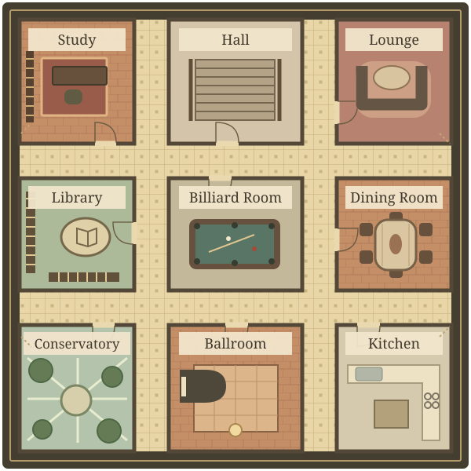

ClueGame
A Java Swing implementation of Clue with config-driven board loading, graph-based movement, card dealing, suggestions, accusations, and computer-player decision logic.

Choose the level of abstraction
Switch between two useful zoom levels. Operator explains the experience and rules a player encounters; Builder follows the code and tests that make those rules work.
A board game whose moving parts stay coherent
The operator view focuses on what the system makes possible: legal moves are clear, suggestions resolve predictably, computer players act within the same rules, and the interface keeps the current turn understandable.
A turn connects several decisions: move through the board, enter a room, make a suggestion, compare it with other players’ cards, then use what you learn to decide whether to accuse. The interface presents those choices while the game enforces the same rules for human and computer players.
Configuration-driven behavior with tested boundaries
The builder view follows the runtime model: external files construct the board, adjacency graphs constrain movement, focused classes coordinate cards and turns, and JUnit tests protect the rules most likely to drift.
The board model connects layout data to playable behavior: parsed spaces form a movement graph, turn orchestration applies game rules, and the Swing interface reflects resulting state. Tests exercise those boundaries, including movement, card dealing, suggestion disproof, accusations, and computer-player choices.
Overview
ClueGame is a desktop game built around a custom Clue board. The application parses external setup and layout files, builds the board model at runtime, calculates legal movement targets, handles card distribution, and drives human and computer turns through a Swing interface.
The important part is the amount of rule coordination. Rooms, doors, secret passages, occupied cells, player hands, seen cards, suggestions, disproof rules, accusations, and GUI updates all have to stay in sync while the game progresses.
Key Features
Config-Driven Board
Loads rooms, spaces, weapons, players, labels, centers, doors, and secret passages from CSV and setup files.
Movement Engine
Calculates valid targets using adjacency lists, dice rolls, room entry rules, occupied cells, and secret passages.
Card Logic
Selects a hidden solution, deals remaining cards fairly, and resolves suggestions in player order.
Swing Interface
Renders the board, highlights valid moves, shows turn state, supports dialogs, and tracks known cards.
Technical Implementation
Architecture
The code separates board state, cell metadata, player behavior, turn orchestration, card models, and UI panels into focused Java classes. Board owns the map, deck, solution, movement graph, rendering, and config parsing. TurnManager coordinates turn progression, human input, computer moves, suggestions, accusations, and GUI updates.
Testing
The test suite covers file initialization, malformed config handling, board adjacencies, target calculation, deck setup, fair dealing, suggestion disproof, accusation checking, and computer-player choices.